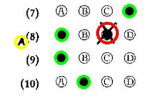

MCQ-XeLaTeX: Multiple Choice Questions for mathematics and XeLaTeX¶
| Date: | 2019-02-07 (update 2020-04-08) |
|---|
Multiple Choice Questions in XeLaTeX, and OMR (Optical Mark Recognition)¶
MCQ-XeLaTeX is a program I’ve been using and developing over the last few years, to author, manage, mark, analyse and transcode exams based on Multiple Choice Questions entirely in LaTeX. It is supposed to be multi-platform (it runs on unix/linux, mac and with a few limitations, due to missing system libraries, on windows - with or withour cygwin), and features an OMR (Optical Mark Recognotion) engine to automatically grade/mark the exam sheets. By design it does not have any Graphical User Interface, and it reinforces a paranoid control model, where every step of the process is accountable, verified, logged and traced. It can help performing the following tasks, keeping the possibility that each of the steps can be performed manually as a failsafe procedure.
Authoring: The format of the questions is LaTeX, with the LaTeX
style mcq.sty. For a series of reasons it is
necessary to compile it with the xelatex engine, to see a PDF
printable version (useful for reviewing and proof-reading). The
questions can be just exported to MOODLE or
saved as dynamical HTML.
Managing and shuffling: Given a list of questions, it can generate
n copies of the exam sheet, each with a permutation of the questions,
and each question with permuted answers. Plus, there are truth/false
questions, and variants of multiple choice questions. Each sheet has a
unique barcode, and the students can be identified by their UID. A table
with UID’s and student names can be used to fill the names. If you have
a list of previous files with MCQ questions (a question bank, a library
of questions), mcq.py can choose a random sample of
questions.
Marking: If you have a scanner, you can automatically mark the answer sheets (bubblesheets), and export a CSV file with the results. Double-checking possible mistakes is performed by reviewing a visually annotated PDF. The OMR (Optical Mark Recognition) is automatic and reasonably reliable (being a client-server model, it needs internet: the actual Mark Recognition is performed elsewhere, on a secure server). But it is easy, if and where needed, to revert to manual human marking.
Analysing: A few simple statistical indices are computed on the marking data (facility index, discrimination index, non-responses), helping to assess problems.
Transcoding: The MCQ LaTeX format is sufficiently abstract, that
mcq.py can export
GIFT files (to be imported on a
MOODLE course) or dynamical HTML files (such
as these examples). In
the latter case, the resulting HTML files will be self-contained, will
display mathematical symbols with MathJax
and will be dynamical (showing proper feedback to readers) with
CSS+Javascript (see these
examples).
How¶
Check the requirements below, first. Then simply download the files
mcq.py and mcq.sty, put them in
some proper path, and then run
mcq.py
in a terminal. Then follow the on-screen instructions, or check the MCQ-XeLaTeX: Quickstart.
A typical list of actions might be:
- generate a new file main.tex
- add exercises to main.tex, compile it, review it, print it, until ready.
exam 120: generated 120 different copies to print and give to students.- scan the students sheets, or, if no scanner works, create a TXT file with the students answers.
omr scannedfiles*.pdf: perform Optical Mark Recognition on the scanned sheets, and obtain a TXT file of their answers, which can be reviewed and modified with any text editor (vim, emacs, notepad).open main_answers.pdf: open an annotated copy of the student scanned answers, to review possible system errors or human mistakes.uid uidlist.csv: add student names to the reviewed answers file, taken from the fileuidlist.csv.mark: evaluate and mark. The output can be later processed with any spreadsheet software, or text editor.makestats: make a PDF versione of the exam, with annotations about some statistical indices.export main.gift: export the questions in GIFT format (and add .txt ext)export main.html: export the questions in HTML format.
Since a session usually takes several days, the status is kept persistent between partial sessions, and a few checks are performed, to be sure to avoid simple mistakes. If after delivering the exam you notice that some questions were wrongly evaluated, or some correct answers wrongly attributed, it is always possible to trace back a few steps and correct the mistake, by checking the logs and manually modifying the proper files.
Example¶
Consider the file example.tex, which produces
this PDF (it is a subset of a the
Multiple Choice questions
written by T. Tao). First we
generate and print 10 permuted copies, then
we collect the scanned OMR filled sheets like
this file, and let mcq.py do the
rest. In this example I’ve used all possible wrong pens, with different
outcomes. A sample session can be of some help to
understand the workflow (I used `vi` to edit the text files, but of
course it is not mandatory: you can use whatever text editor works). The
stats output can be generated after the
marking.
Requirements¶
Requirements are very minimal, and the program has been tested on a variety of platforms.
- Python. Any version 2.* or 3.* should work
but it’s safer to stay with 3 (warning: 2.7.5 might show
this bug). To switch bewteen 2 and 3,
just edit the script file mcq.py and
in the first line replace the word 'python' with the word
'python3' (or the 2.* version available).
The (free) OTF font Linux Libertine, or the TTF version (but in this case: plase call the sty package with the `ttf` option, and
a not-too-old TeX system.
If you do not have one already installed, probably you do not know what LaTeX is, and you cannot use MCQ-XeLaTeX.
On windows: it is not strictly necessary, but it is much better to install pyreadline. This will allow tab-completion in the interface, and avoid annoying messages.
To install the OTF/TTF font Linux Libertine, as follows:
- MacOSX: unzip the font archive, then click on all the TTF/OTF files, and follow the FontBook instructions.
- Linux: Unzip the package and install the fonts with the help of
your desktop control app, such as KDE-Kontrol, or simply copy
the content in
${HOME}/.fonts/. There was an easy package ttf-linux-libertine on debian/ubuntu based systems, if you had admin privileges, but now, despite its name, apparently it does not contain the TTF version, but only the OTF version (which is now the default withmcq.sty). - Windows: Unzip the package and copy all the OTF/TTF font files into the folder C:\Windows\Fonts, or control-click and select Install.
Important: the 2018 default is now OTF, not TTF. To use TTF simply call mcq.sty with the additional option `ttf`
\usepackage[ttf]{mcq}
To install mcq.sty in a place where it can be found
by TeX: the main point is to know what is the value of TEXMFHOME, for
the local TeX installation. So, run
kpsewhich -var-value TEXMFHOME
and check the output (see how to have private installations of
files).
Then, add mcq.sty to ${TEXMFHOME}/tex/latex/, or to a
subdirectory in it, and run texhash. Or, simply put
mcq.sty in the directory where you plan to work.
For example:
- MacOSX: put
mcq.styin the directory${HOME}/Library/texmf/tex/latex/(create it if it does not exists). - Linux: put it in a directory like
${HOME}/.texmf/tex/latex/, or${HOME}/.texmf-var/tex/latex/. - Windows: Same as above
(you could run
texconfiginstead ofkpsewhich -var-value TEXMFHOME).
To install mcq.py in a place where it can be
automatically found by your shell, it suffices to put it in one of the
directories listed in the environment variable
PATH
(``${PATH}``, or %PATH% accordingly).
Do not forget to make it executable: control-click on the file, or
chmod +x mcq.py
How it works¶
(to appear)
LaTeX commands and environments¶
(to appear) Please try to read the (preliminary) manual page and quick start page. Also, there are some comments in mcq.sty and some explanation in the in-line help of the software itself.
Similar programs¶
- Auto Multiple Choice: it’s obviously a better program, powerful and complete, but I had problems installing it on macs (it is designed for linux), and I found the LaTeX syntax not as easy as I would have liked it to be. Also, it did not seem possible to export the questions to other formats, or to randomly choose the questions from a questions-bank; also, it did not seem to have simple bubblesheets.
- TCExam: an Open Source system for electronic exams (also know as CBA - Computer-Based Assessment, CBT - Computer-Based Testing or e-exam), with OMR functionality. It is not something an individual would install and use, and as an individual I did not.
- FormReturn: a commercial (an
academic site license costs 3495$) package. Costly, and their
definition of Integrated, Easy Setup & Easy To Use differed from
mine. I could reproduce most of its functionality in
mcq.py, adding LaTeX authoring and a more paranoid control model. - Remark Office OMR: another commercial package (a site license costs in the range of thousands of $).
- On the Wikipedia page there are a few other programs, which did not meet my needs.
End-User License Agreement (EULA)¶
You can use the software described and linked in this page as a trial and evaluation, as-it-is, without any guarantee, at the following additional conditions. By downloading the files you automatically accept these terms and conditions.